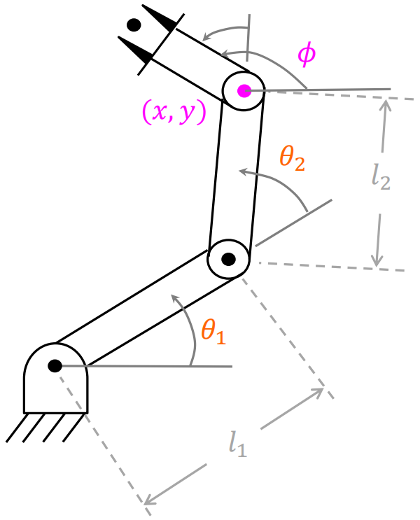
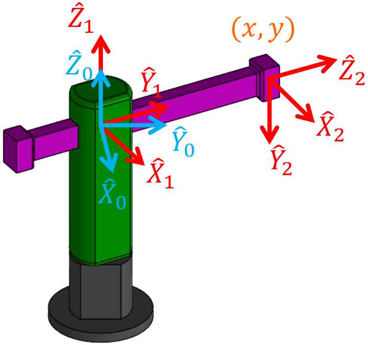
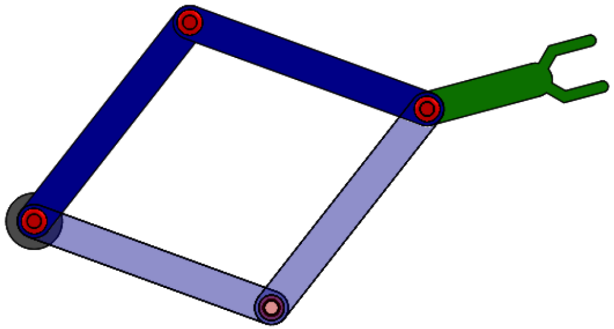
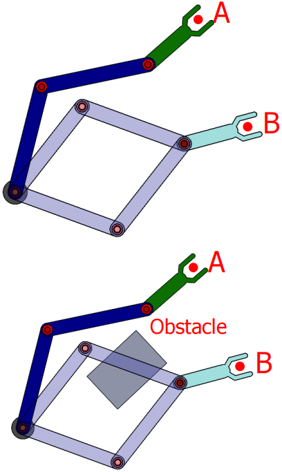
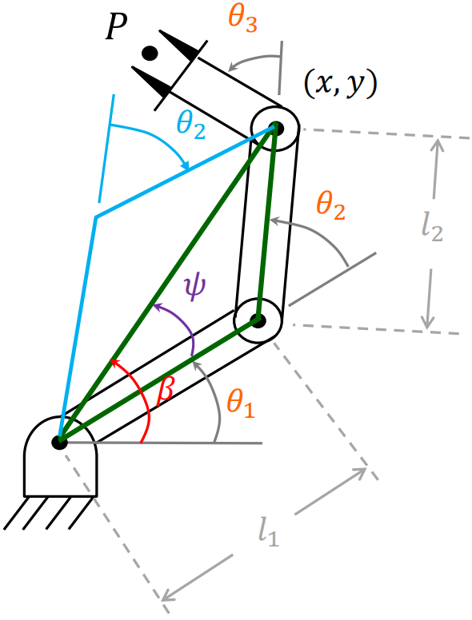

操作臂逆运动学
上一章我们讨论了已知关节角，计算工具坐标系相对于固定坐标系的位姿的问题。在本章中我们将研究已知工具坐标系相对于固定坐标系的期望位姿，如何计算一系列满足期望要求的关节角，即逆运动学问题
逆运动学方程的解
解的存在性
研究解是否存在放在操作臂上即研究操作臂的工作空间
可达工作空间（Reachable Workspace）：手臂可以用至少一种姿态到达的位置
灵巧工作空间（Dexterous Workspace）：手臂可以用任何姿态到达的位置

我们用R（旋转关节）和P（移动关节）的字母组合来简记一个操作臂的关节连接顺序
在上图的处于二维平面的RR操作臂中，如果$l_1>l_2$，其可达工作空间为外径$l_1+l_2$、内径$l_1-l_2$的圆环，没有灵巧工作空间；如果$l_1=l_2$，其可达空间为半径$l_1+l_2$的圆，圆心为灵巧工作空间
如果要让操作臂达到一个三维空间内一般的目标位置和姿态，至少需要六个自由度。当操作臂自由度$n<6$时，其工作空间会被局限在仅能由$n$个独立变量描述的$n$自由度子空间（Subspace），又由于操作臂关节的活动范围受限，其工作空间是对应的$n$自由度子空间的子集
对于上图的RRR操作臂，其工具坐标系的位置局限在由两个独立坐标变量$x$、$y$描述的一个平面内，而姿态局限在该平面中的一个独立旋转角度变量$\phi$，由此我们用三个独立变量描述出它的三自由度子空间为：
$^0_3T=\begin{bmatrix}c_\phi&-s_\phi&0&x\\s_\phi&c_\phi&0&y\\0&0&1&0\\0&0&0&1\end{bmatrix}$
而其工作空间则进一步局限在该子空间中满足$\sqrt{x^2+y^2}\leqslant l_1+l_2+l_3$的部分中
对于上图的RP操作臂，其工具坐标系的位置局限在由两个独立坐标变量$x$、$y$描述的一个平面内，而姿态也同时由$x$、$y$所决定，$^0\hat{Y}_2$始终向下，$^0\hat{Z}_2$与原点的位置矢量同向，$^0\hat{X}_2$由$^0\hat{Y}_2$、$^0\hat{Z}_2$叉乘得到，其二自由度工作空间为：
$^0_2T=\begin{bmatrix}\frac{y}{\sqrt{x^2+y^2}}&0&\frac{x}{\sqrt{x^2+y^2}}&x\\\frac{-x}{\sqrt{x^2+y^2}}&0&\frac{y}{\sqrt{x^2+y^2}}&y\\0&-1&0&0\\0&0&0&1\end{bmatrix}$
多解问题
由于逆运动学方程是非线性方程，求解过程中往往遇到多解问题
通过上图我们来直观感受：对于同一个绿色末端连杆的目标位姿，根据肘部方向的不同，前两根连杆有深蓝和浅蓝所示的两种方式可以达到
但我们只能选择一个解来执行，因此要有解的选择标准。常见的选择条件一个是要求到达目标位姿的过程中每个运动关节的运动量最小，即就近原则，另一个是考虑运动轨迹中的障碍物。下图直观展示了这两种情况：
解的个数取决于操作臂的关节数量、连杆参数和关节运动范围
对于关节数量，考虑一种极限状态，当一个操作臂在一定长度内有无穷多个关节，即可看做是一根柔性的曲线，对固定的末端姿态，中间段有无穷多个解
对于连杆参数，通常当连杆的非零参数越多，到达某一特定目标的方式也越多。以一个6R操作臂为例，下表展示了解的最大数目与等于零的连杆长度参数的数目之间的关系，非零参数越多，解的最大数目就越大
| $a_i$ | 解的个数 |
|---|---|
| $a_1=a_3=a_5=0$ | $\leqslant4$ |
| $a_3=a_5=0$ | $\leqslant8$ |
| $a_3=0$ | $\leqslant16$ |
| 所有$a_i\neq0$ | $\leqslant16$ |
而关节运动范围则限制了解的选择
逆运动学方程的解法
与线性方程组不同，非线性方程组没有通用的求解算法，我们只能用两大类解法来求解：封闭解（解析解，Closed-form Solutions）和数值解（Numerical Solutions）
封闭解是一个关于方程自变量的解析函数，代入自变量即可解得因变量；数值解通过数值迭代求解。前者的缺点在于不是所有的非线性方程组都有封闭解，后者的缺点在于求解速度慢且不适应多解问题
为此，我们在逆运动学中尽量避免数值解，在设计操作臂的结构时保证其存在封闭解
逆运动学方程封闭解的解法包括代数解法和几何解法，前者纯靠代数运算，后者结合问题的几何性质，以下内容以数学计算为主，与机器人理论联系较少，可适当略读
我们先研究开头举例的RRR操作臂来给出这两种解法，对于给定的目标位姿独立变量$(x,y,\phi)$，求出三个关节的关节角$(\theta_1,\theta_2,\theta_3)$
代数解法
由前文求解的子空间，用目标位姿参数给出的位姿矩阵为：
$^0_3T=\begin{bmatrix}c_\phi&-s_\phi&0&x\\s_\phi&c_\phi&0&y\\0&0&1&0\\0&0&0&1\end{bmatrix}$
由正向运动学，用关节变量给出的位姿矩阵为：
$^0_3T=\begin{bmatrix}c_{123}&-s_{123}&0&l_1c_1+l_2c_{12}\\s_{123}&c_{123}&0&l_1s_1+l_2s_{12}\\0&0&1&0\\0&0&0&1\end{bmatrix}$
其中下标数字组合代表对应关节角的和，如$c_{12}$表示$\cos(\theta_1+\theta_2+\theta_3)$
两矩阵联立得到四个非线性方程：
$c_\phi=c_{123}$①
$s_\phi=s_{123}$②
$x=l_1c_1+l_2c_{12}$③
$y=l_1s_1+l_2s_{12}$④
对③和④同时平方再求和得：
$x^2+y^2=l^2_1+l^2_2+2l_1l_2c_2$
这里利用了三角函数两角和公式
由此求解出$c_2=\frac{x^2+y^2-l^2_1-l^2_2}{2l_1l_2}$
上式有解的条件为等式右侧的值必须在$[-1,1]$之间，否则说明在物理结构上目标点位置太远，操作臂不可达
假定目标点在工作空间内，则$s_2=\pm\sqrt{1-c^2_2}$
$\theta_2=\textup{Atan2}(s_2,c_2)$
式中正负符号的选择对应“肘部朝上”还是“肘部朝下”的多解问题
接下来求$\theta_1$
令：
$k_1=l_1+l_2c_2$
$k_2=l_2s_2$
则③和④可写成：
$x=k_1c_1-k_2s_1$
$y=k_1s_1+k_2c_1$
求解该类方程可用变量代换改变常数$k_1$和$k_2$的形式，如果：
$r=\sqrt{k^2_1+k^2_2}$
$\gamma=\textup{Atan2}(k_2,k_1)$
则：
$k_1=r\cos\gamma$
$k_2=r\sin\gamma$
则③和④可进一步写成：
$\frac{x}{r}=\cos\gamma\cos\theta_1-\sin\gamma\sin\theta_1$
$\frac{y}{r}=\cos\gamma\sin\theta_1-\sin\gamma\cos\theta_1$
因此：
$\cos(\gamma+\theta_1)=\frac{x}{r}$
$\sin(\gamma+\theta_1)=\frac{y}{r}$
得：
$\gamma+\theta_1=\textup{Atan2}(\frac{y}{r},\frac{x}{r})=\textup{Atan2}(y,x)$
从而：
$\theta_1=\textup{Atan2}(y,x)-\textup{Atan2}(k_2,k_1)$
最后$\theta_3$由$\theta_1+\theta_2+\theta_3=\phi$解出
几何解法
画出以三个关节为顶点的三角形，由余弦定理得：
$x^2+y^2=l^2_1+l^2_2-2l_1l_2\cos(\theta_2+\pi)$
由此求解出$c_2=\frac{x^2+y^2-l^2_1-l^2_2}{2l_1l_2}$
为求解出$\theta_1$，需求出图中$\psi$和$\beta$的表达式
$\beta$是位置矢量与$\hat{X}_0$的夹角，可得：
$\beta=\textup{Atan2}(y,x)$
可在三角形再次利用余弦定理解出$\cos\psi=\frac{x^2+y^2+l^2_1-l^2_2}{2l_1\sqrt{x^2+y^2}}$
为使几何关系成立，求反余弦需使$0\leqslant\psi\leqslant\pi$
于是$\theta_1=\beta\pm\psi$，当$\theta_2<0$取正，当$\theta_2>0$取负
最后$\theta_3$由$\theta_1+\theta_2+\theta_3=\phi$解出
万能公式
对于单变量的三角函数超越方程，可用万能公式代换化为多项式方程
令$u=\tan\frac{\theta}{2}$
则$\cos\theta=\frac{1-u^2}{1+u^2}$，$\sin\theta=\frac{2u}{1+u^2}$
三轴相交的Pieper解法
尽管一般的六自由度机器人没有封闭解，但在某些特殊情况下还是可解的。Pieper提出了一种求解最后三个连续轴相交于一点的六自由度操作臂的方法，核心思想为让$\theta_1$、$\theta_2$、$\theta_3$层层分离
当最后三个轴相交时，连杆坐标系$\{4\}$、$\{5\}$、$\{6\}$的原点均位于这个交点上，因此：
$^0P_{6ORG}=^0P_{4ORG}=^0_1T^1_2T^2_3T^3P_{4ORG}=\begin{bmatrix}x\\y\\z\\1\end{bmatrix}$
其中，$^3P_{4ORG}$即$^3_4T$的第四列，由第三章中相邻连杆变换矩阵公式代入得：
$^0P_{4ORG}=^0_1T^1_2T^2_3T\begin{bmatrix}a_3\\-d_4s\alpha_3\\d_4c\alpha_3\\1\end{bmatrix}$
将$^2_3T$乘进去得：
$^0P_{4ORG}=^0_1T^1_2T\begin{bmatrix}f_1(\theta_3)\\f_2(\theta_3)\\f_3(\theta_3)\\1\end{bmatrix}$
式中：
$f_1=a_3c_3+d_4s\alpha_3s_3+a_2$
$f_2=a_3c\alpha_2s_3-d_4s\alpha_3c\alpha_2c_3-d_4s\alpha_2c\alpha_3-d_3s\alpha_2$
$f_3=a_3s\alpha_2s_3-d_4s\alpha_3s\alpha_2c_3+d_4c\alpha_2c\alpha_3+d_3c\alpha_2$
继续将$^0_1T^1_2T$乘进去得：
$^0P_{4ORG}=\begin{bmatrix}c_1g_1-s_1g_2\\s_1g_1+c_1g_2\\g_3\\1\end{bmatrix}$①
式中：
$g_1=c_2f_1-s_2f_2+a_1$
$g_2=s_2c\alpha_1f_1+c_2c\alpha_1f_2-s\alpha_1f_3-d_2s\alpha_1$
$g_3=s_2s\alpha_1f_1+c_2s\alpha_1f_2+c\alpha_1f_3+d_2c\alpha_1$
现在写出$^0P_{4ORG}$模的平方的表达式：
$r=x^2+y^2+z^2=g_1^2+g_2^2+g_3^2$
$r=f_1^2+f_2^2+f_3^2+a_1^2+d_2^2+2d_2f_3+2a_1(c_2f_1-s_2f_2)$
上式与$z=g_3$联立得到一个方程组：
$\left\{\begin{matrix}r=(k_1c_2+k_2s_2)2a_1+k_3\\z=(k_1s_2-k_2c_2)s\alpha_1+k_4\end{matrix}\right.$②
式中：
$k_1=f_1$
$k_2=-f_2$
$k_3=f_1^2+f_2^2+f_3^2+a_1^2+d_2^2+2d_2f_3$
$k_4=f_3c\alpha_1+d_2c\alpha_1$
该方程组的求解分三种情况：
$1)$若$a_1=0$，则$r=k_3$，$r$已知，$k_3$是关于$\theta_3$的一元函数，由万能公式解出$\theta_3$
$2)$若$s\alpha_1=0$，则$z=k_4$，$z$已知，$k_4$是关于$\theta_3$的一元函数，由万能公式解出$\theta_3$
$3)$否则，消元法消去$c_2$和$s_2$，得到：
$\frac{(r-k_3)^2}{4a_1^2}+\frac{(z-k_4)^2}{s^2\alpha_1}=k_1^2+k_2^2$
由万能公式得到一个四次方程解出$\theta_3$
解出$\theta_3$后，可由②解出$\theta_2$，由①解出$\theta_1$
为了完成求解工作，还需要求出$\theta_4$、$\theta_5$、$\theta_6$，由于这些轴相交，原点已经确定，故这些关节角只影响末端连杆的姿态。先利用已经解出的$\theta_1$、$\theta_2$、$\theta_3$算出连杆坐标系$\{4\}$的初始姿态$^4_0R|_{\theta_4=0}$，再计算出以此为参考坐标系的末端连杆的姿态描述：
$^4_6R|_{\theta_4=0}=^0_4R^{-1}|_{\theta_4=0}{}_6^0R$
用欧拉角定义最后三个关节角得到一个旋转矩阵后与$^4_6R|_{\theta_4=0}$联立即可完成求解
关于用欧拉角定义关节角：
由于不同关节角对应的转轴是不同连杆坐标系的关节轴，而欧拉角从始至终都是绕一个坐标系的主轴旋转，因此用欧拉角来描述关节角的变换过程时，我们有时需要使欧拉角在关节角的基础上多转$180^\circ$，让欧拉角坐标系中的一个主轴能跟下一个连杆坐标系的关节轴对齐，便于用下一次旋转的欧拉角描述下一次旋转的关节角，可结合下图理解，其中连杆坐标系每次从蓝色变换到红色，欧拉角坐标系每次从橙色变换到绿色

本章完